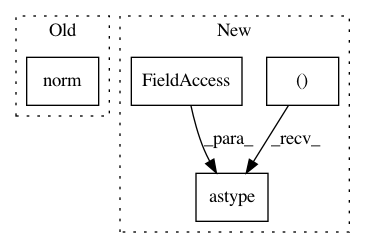

f0363f957b8e6d2680af887972387de7f00b2715,geomstats/stiefel.py,Stiefel,belongs,#Stiefel#Any#Any#,38
Before Change
if point_dim != (self.n, self.p):
return False
point_norm = gs.norm(
gs.dot(gs.transpose(point), point) - gs.eye(point_dim[1])
)
return gs.less_equal(point_norm, tolerance)
def project(self):
After Change
n_points, n, p = point.shape
if (n, p) != (self.n, self.p):
return gs.zeros((n_points,)).astype(bool)
diff = gs.matmul(
gs.transpose(point, axes=(0, 2, 1)), point) - gs.eye(p)
point_norm = gs.norm(diff, axis=(1, 2))
In pattern: SUPERPATTERN
Frequency: 3
Non-data size: 4
Instances
Project Name: geomstats/geomstats
Commit Name: f0363f957b8e6d2680af887972387de7f00b2715
Time: 2018-11-21
Author: 15810673+oleg-kachan@users.noreply.github.com
File Name: geomstats/stiefel.py
Class Name: Stiefel
Method Name: belongs
Project Name: mne-tools/mne-python
Commit Name: beaff02d91a80c2cf12e626d47b3f1678188472d
Time: 2020-04-22
Author: larson.eric.d@gmail.com
File Name: mne/source_space.py
Class Name:
Method Name: _get_volume_label_mask
Project Name: geomstats/geomstats
Commit Name: 42ce0dba0e496fca8b567516499909e185b70322
Time: 2018-11-20
Author: 15810673+oleg-kachan@users.noreply.github.com
File Name: geomstats/stiefel.py
Class Name: Stiefel
Method Name: belongs